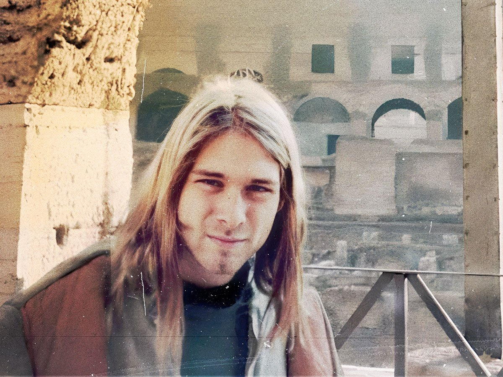
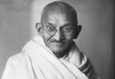

Quotes

"The duty of youth is to challenge corruption." – Kurt Cobain
"Dripping water hollows out stone, not through force but through persistence."" – Ovid

"It’s the action, not the fruit of the action, that’s important. You have to do the right thing. It may not be in your power, may not be in your time, that there’ll be any fruit. But that doesn’t mean you stop doing the right thing. You may never know what results come from your action. But if you do nothing, there will be no result." – Mahatma Gandhi
"Education is the most powerful weapon which you can use to change the world" – Nelson Mandela
"No one will do for you what you need to do for yourself. We cannot afford to be separate. We have to see that all of us are in the same boat." – Dorothy Height
"I start with the premise that the function of leadership is to produce more leaders, not more followers."– Ralph Nader
“We must always take sides. Neutrality helps the oppressor, never the victim. Silence encourages the tormentor, never the tormented.” ― Elie Wiesel
“I’m convinced of this: Good done anywhere is good done everywhere. For a change, start by speaking to people rather than walking by them like they’re stones that don’t matter. As long as you’re breathing, it’s never too late to do some good.”- Maya Angelou
"When you see something that is not right, not fair, not just, you have to speak up. You have to say something; you have to do something.” -John Lewis